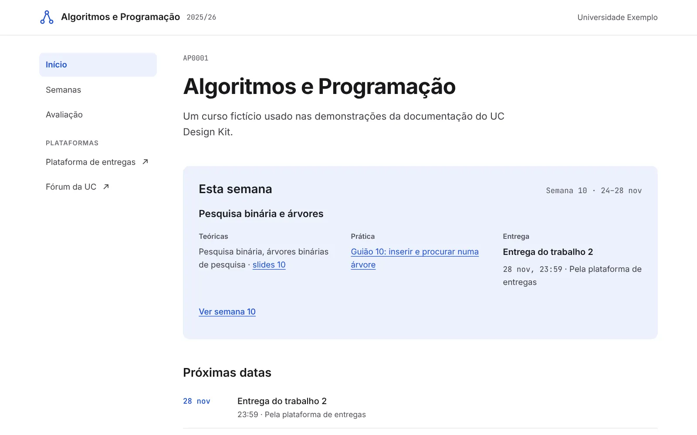
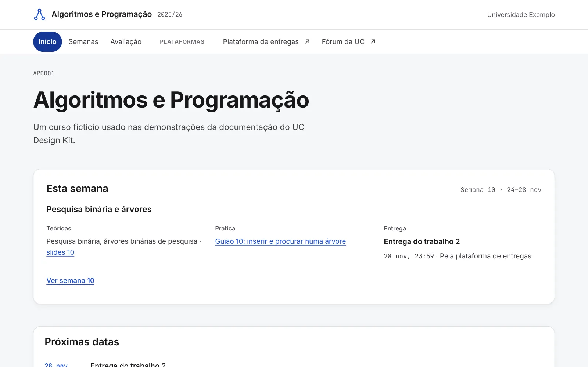
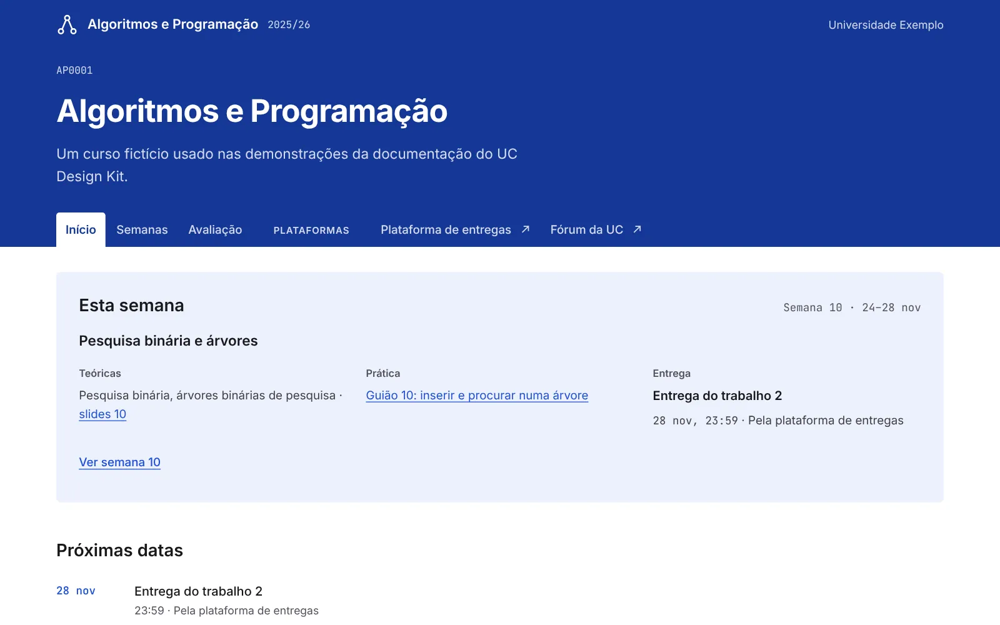
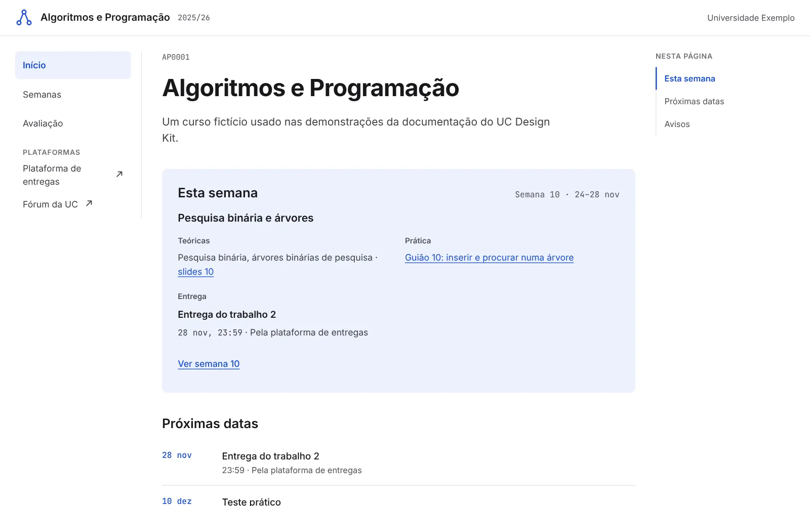
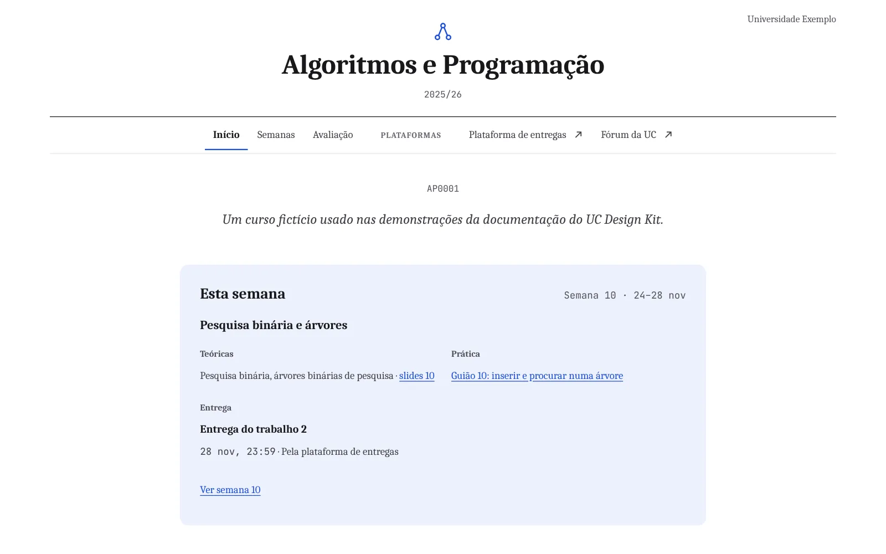

Personalizar
Escolher um tema
O modelo do site já vem com um tema escolhido, o Clássico, e só se descarrega o tema que se escolhe. Mudar de tema é mudar uma linha do course.js: o HTML das páginas fica igual.
Como se escolhe
O course.js do modelo traz o tema ativo e os outros comentados, um por linha. Para trocar, comenta-se a linha ativa e tira-se o comentário da do tema que se quer:
window.UC_COURSE = {
// …
theme: "classic", // Clássico: navegação à esquerda (o aspeto do kit)
// theme: "modern", // Moderno: navegação no topo, cartões com sombra
// theme: "institutional", // Institucional: faixa da cor do curso
// theme: "handbook", // Manual: três colunas com "Nesta página"
// theme: "editorial", // Editorial: centrado, letra com serifa
};Cada tema é um ficheiro de kit/v1/themes/ e cada layout novo um de kit/v1/layouts/. O kit acrescenta o ficheiro do tema escolhido (e o do seu layout) a seguir ao uc-kit.css, espera por ele antes de mostrar a página e não descarrega os outros. O Clássico já está no uc-kit.css, por isso não descarrega nada. Um site sem theme fica com o Clássico, como antes.
Um tema escolhe três coisas:
- O layout de todas as páginas: onde fica a navegação, quantas colunas há e como é o cabeçalho (ver os layouts do
<uc-page>). - Tokens: cantos, letra, espaços, fundo.
- Variantes de alguns componentes: as semanas em tabela, a equipa em tabela, a apresentação centrada. O atributo do componente ganha sempre ao tema.
Os cinco temas
As imagens são a página inicial do curso de demonstração num ecrã de 1280 px, com cada tema e nada mais. Cada uma abre o curso com esse tema, para o percorrer e ver no telemóvel.
| Tema | theme | Layout | Para quem |
|---|---|---|---|
| Clássico | "classic" | sidebar | Sites com muitas páginas e plataformas; o aspeto que o kit sempre teve. |
| Moderno | "modern" | top | Poucas páginas e tabelas largas, com um aspeto de aplicação. |
| Institucional | "institutional" | banner | Uma página com ar de site oficial da faculdade, na cor do curso. |
| Manual | "handbook" | docs | Guiões e apontamentos longos, que se leem por secções. |
| Editorial | "editorial" | centered | Muito texto corrido (sumários, apontamentos), com aspeto de livro. |
Clássico

theme: "classic". Abrir o curso de demonstração com este tema.Navegação vertical à esquerda, que no telemóvel passa a um botão "Menu". É o tema do modelo e o aspeto dos sites feitos antes da versão 1.2.
Moderno

theme: "modern". Abrir o curso de demonstração com este tema.A navegação numa faixa por baixo do cabeçalho, em pílulas, com a página atual a cheio. Fundo cinzento claro, cartões brancos com sombra suave (o "Esta semana", os avisos, as datas, os cartões .uc-card e o mosaico), cantos mais redondos e o título da apresentação maior.
Institucional

theme: "institutional". Abrir o curso de demonstração com este tema.O cabeçalho, a apresentação da cadeira (o primeiro <uc-hero> da página) e a navegação numa faixa da cor do curso, com as páginas em separadores. Nas páginas sem <uc-hero> a faixa só tem o cabeçalho e os separadores. Cantos mais retos e os títulos das secções sublinhados.
A faixa usa a versão escura da cor do curso, com texto branco. Uma cor que já passa no contraste com o branco (ver Verificar o contraste) passa também aqui.
Manual

theme: "handbook". Abrir o curso de demonstração com este tema.Três colunas: a navegação, o conteúdo e "Nesta página", com as secções da página e a que está à vista marcada. Abaixo de 1200 px, "Nesta página" passa a um botão por cima do conteúdo. Num guião, o progresso dos exercícios fica no topo dessa coluna. A letra e os espaços são os do compact e a página de semanas aparece como tabela compacta.
Editorial

theme: "editorial". Abrir o curso de demonstração com este tema.O cabeçalho e a navegação centrados, o título do curso em letra grande e o conteúdo numa coluna de leitura de 760 px. Letra com serifa (a do serif) com mais espaço entre linhas. A apresentação fica centrada, com a descrição em itálico (o título já está no cabeçalho e fica só para leitores de ecrã), e a equipa aparece em tabela.
Juntar um tema de tokens
Os temas compact, serif e high-contrast só mudam tokens, por isso juntam-se a qualquer um dos cinco numa lista. O tema com layout vai primeiro:
theme: ["institutional", "high-contrast"],Só pode haver um tema com layout de cada vez. Se a lista tiver dois, fica o último e a consola avisa. O que cada tema de tokens muda está em Criar um tema.
Mudar o layout de um tema
O tema escolhe o layout, mas quem escreve o site ganha sempre. Pela ordem em que o kit decide:
- O atributo de uma página, só para essa página:
<uc-page layout="full">num enunciado que vai ser projetado. - O
layoutdocourse.js, para todas as páginas: o Institucional com a barra lateral de sempre. - O layout do tema (a propriedade
--uc-layoutdo ficheiro do tema, ou a dotheme.cssdo site, que carrega depois). sidebar, sem nada disto.
theme: "institutional",
layout: "sidebar", // as cores e os cantos do Institucional, com a navegação à esquerdaOs layouts que nenhum tema usa (panel, aside e onepage) escolhem-se assim, com qualquer tema. Um layout que não existe é ignorado com um aviso na consola, e decide o nível seguinte.
As variantes também se desligam numa página: <uc-weeks view="full"> mostra as semanas completas no Manual, <uc-team view="cards"> a equipa em cartões no Editorial, <uc-hero align="start"> a apresentação alinhada à esquerda. Para todo o site, ver Ajustar um tema pronto.
Experimentar antes de escolher
- O personalizador de tema mostra o curso de demonstração com o tema, o layout e os tokens escolhidos e dá as linhas a copiar para o
course.jse otheme.css. - A galeria de secções mostra cada bloco com cada tema, no seletor "Tema das pré-visualizações".
- No próprio site: muda-se a linha
themedocourse.js, recarrega-se a página e volta-se atrás se não ficar bem. Nada mais muda.
Mudar o tema de um site que já existe
Os passos estão em Migrar um site existente. Em resumo: muda-se a linha theme do course.js (ou acrescenta-se, num site anterior à versão 1.2), revê-se o theme.css do site, que continua a ganhar ao tema, e percorrem-se as páginas com o layout novo.
Ver também
- Criar um tema: ajustar um tema pronto e escrever um tema próprio, com ou sem layout.
- Criar um layout: um layout próprio a partir de um layout do kit.
- uc-page: os nove layouts, com uma demonstração de cada.
- O ficheiro course.js: os campos
theme,layout,asideepanel.